Evaluating observational methods against a benchmark: LaLonde (1986)
This lab looks at a classic paper which studies the performance of different observational adjustment methods relative to an experimental benchmark. LaLonde (1986) carries out a re-analysis of a large-scale randomized experiment of a job training program. In the 1970s, the federal government instituted a fully randomized evaluation of the National Supported Work Demonstration, a subsidized work program. The paper compared the estimated effects obtained from the randomized trial to an artificial observational dataset that combined the treated units from the experiment with a non-experimental control group using respondent data from the Population Survey fo Income Dynamics (PSID). The original paper (and follow-up evaluations of other observational methods) compared estimates from regression on the “observational” dataset with the experimental benchmark to see how well the observational analysis could recover the “hidden experiment” in the data.
You will need two datasets. The experimental data is nsw_exper.dta. The observational data is nsw_psid_withtreated.dta. The variables of interest are:
re78 - Outcome: Real (inflation adjusted) earnings for 1978
nsw - Treatment (1 for NSW participants, 0 otherwise)
age - Age in years
educ - Years of education
black - Respondent is African American
hisp - Respondent is Hispanic
married - Respondent is married
re74 - Real (inflation adjusted) earnings for 1974
re75 - Real (inflation adjusted) earnings for 1975
First let’s estimate the benchmark ATE of assignment to the NSW program on real earnings in 1978 using the experiment
lm_robust(re78 ~ nsw, data=benchmark)
Estimate Std. Error t value Pr(>|t|) CI Lower CI Upper DF
(Intercept) 4554.802 340.0931 13.392809 1.391003e-34 3886.4059 5223.199 443
nsw 1794.343 670.9967 2.674146 7.769016e-03 475.6108 3113.075 443
On average, we estimate the program increased real earnings by about 1794 dollars. Our 95% confidence interval does not contain 0, so we’d reject the null of no ATE at \(\alpha = .05\).
Let’s compare this to the estimate we’d get if we took the simple difference in means in the observational data
lm_robust(re78 ~ nsw, data=lalonde)
Estimate Std. Error t value Pr(>|t|) CI Lower CI Upper
(Intercept) 21553.92 311.7310 69.14269 0.000000e+00 20942.66 22165.18
nsw -15204.78 657.0765 -23.14004 3.933528e-108 -16493.21 -13916.35
DF
(Intercept) 2673
nsw 2673
In the observational data, the estimated “effect” of the program is around -15K dollars! Why is the estimate so far off? Because of selection-into-treatment bias. Let’s diagnose using a balance test on some of the observed covariates.
Balance Measures
Type Diff.Un
age Contin. -1.0094
educ Contin. -0.6805
black Binary 1.4816
hisp Binary 0.1288
married Binary -1.8453
re74 Contin. -1.7178
re75 Contin. -1.7744
u74 Binary 1.6454
u75 Binary 1.2309
Sample sizes
Control Treated
All 2490 185
While there might be some minor imbalance in the experimental data, the observational data is clearly imbalanced. Lower-income individuals are more likely to have enrolled in the program (which makes sense - the observational data was created for the LaLonde paper by merging the experiment with a sample from a general survey of the population). So past income is a major confounder!
Let’s see how well the simple additive regression does at recovering the experimental target.
lm_robust(re78 ~ nsw + age + educ + black + hisp + married + re74 + re75 + u74 + u75, data=lalonde)
Not great - we estimate an average effect of 115 (an order of magnitude less than the benchmark). Let’s see what’s going on.
Illustrating regression
We’ll start by looking at an adjustment for lagged income (re75). Start by plotting the relationship between re75 and re78 within the treated and control group. Start with a simple scatterplot:
lalonde %>%ggplot(aes(x=re75, y=re78, colour =as.factor(nsw))) +geom_point() +xlab("Real earnings for 1975") +ylab("Real earnings for 1978") +scale_colour_manual("Treatment", values =c("dodgerblue", "darkorange")) +theme_bw()
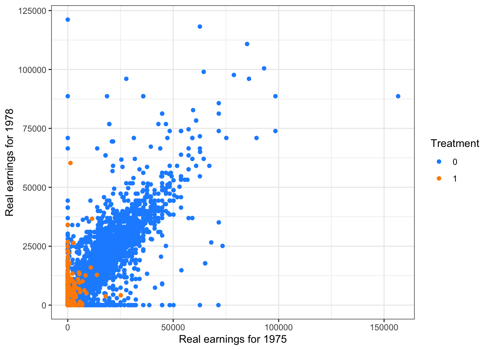
It looks like a lot of the difference is being driven by many of the participants in the NSW being unemployed in 1975 (re75 = 0). Let’s condition on u75 == 0 . We’ll also do a log transform on the X to make visualization easier (we could do this on the outcome as well, but we’d have to deal with the zeroes somehow since log(0) is undefined).
lalonde %>%filter(u75 ==0) %>%ggplot(aes(x=log(re75), y=re78, colour =as.factor(nsw))) +geom_point() +xlab("Transformed real earnings for 1975") +ylab("Real earnings for 1978") +scale_colour_manual("Treatment", values =c("dodgerblue", "darkorange")) +theme_bw()
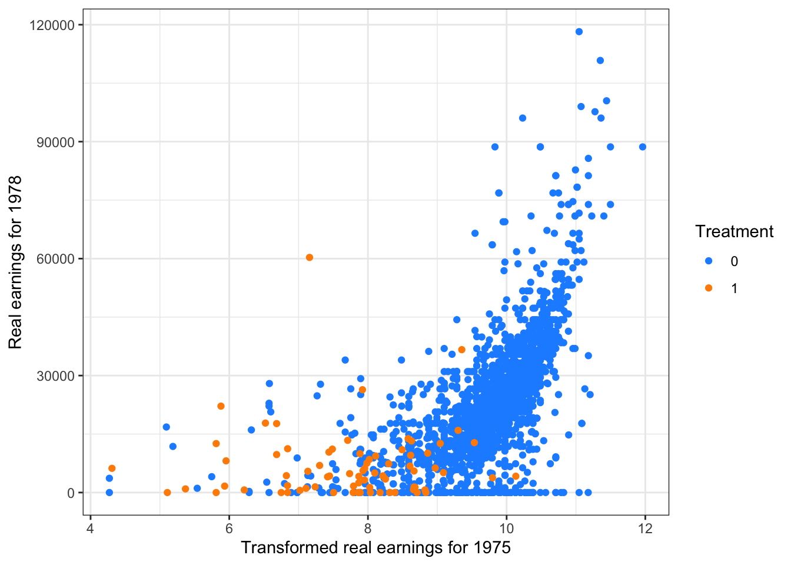
So we have some interesting modeling choices - let’s compare a linear fit versus a quadratic versus a cubic fit.
# Linearlalonde %>%filter(u75 ==0) %>%ggplot(aes(x=log(re75), y=re78, colour =as.factor(nsw))) +geom_point(alpha = .1) +geom_smooth(method="lm_robust", formula = y ~ x) +xlab("Transformed real earnings for 1975") +ylab("Real earnings for 1978") +scale_colour_manual("Treatment", values =c("dodgerblue", "darkorange")) +theme_bw()
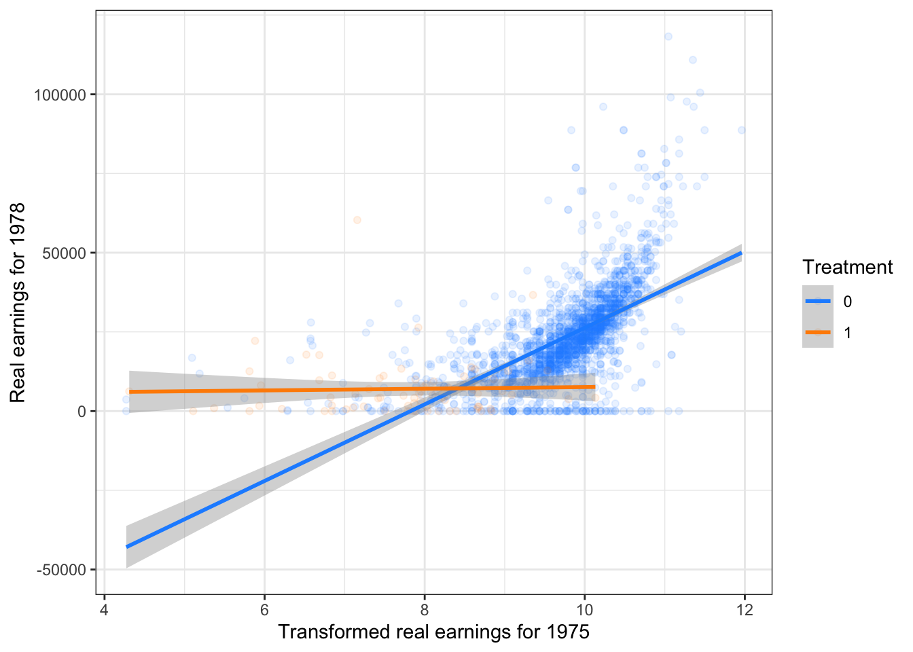
# Quadraticlalonde %>%filter(u75 ==0) %>%ggplot(aes(x=log(re75), y=re78, colour =as.factor(nsw))) +geom_point(alpha = .1) +geom_smooth(method="lm_robust", formula = y ~ x +I(x^2)) +xlab("Transformed real earnings for 1975") +ylab("Real earnings for 1978") +scale_colour_manual("Treatment", values =c("dodgerblue", "darkorange")) +theme_bw()
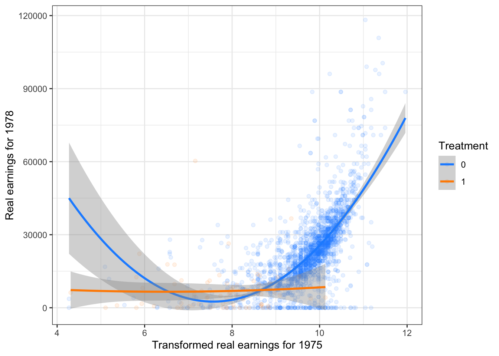
# Cubiclalonde %>%filter(u75 ==0) %>%ggplot(aes(x=log(re75), y=re78, colour =as.factor(nsw))) +geom_point(alpha = .1) +geom_smooth(method="lm_robust", formula = y ~ x +I(x^2) +I(x^3)) +xlab("Transformed real earnings for 1975") +ylab("Real earnings for 1978") +scale_colour_manual("Treatment", values =c("dodgerblue", "darkorange")) +theme_bw()
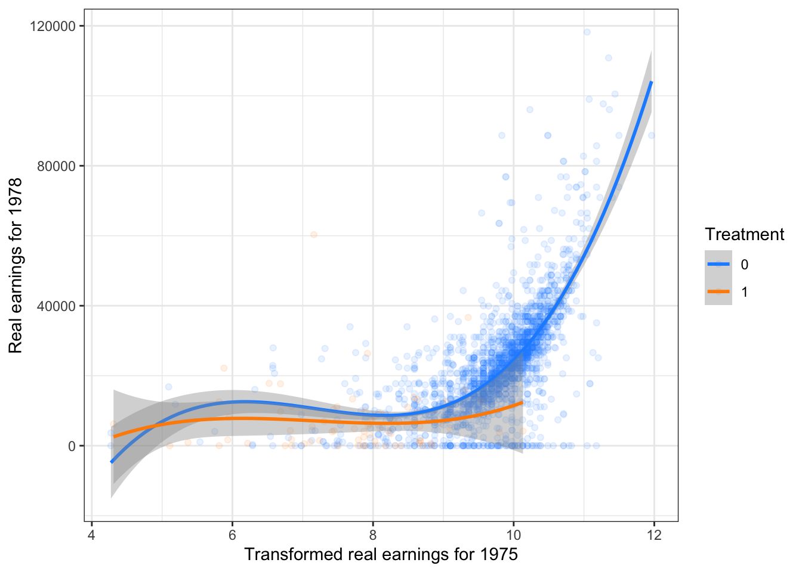
Why are these choices so consequential? Because there is very poor overlap between the distribution of the treated units and the control units. So a model fit to the entire control distribution. We might try transforming the outcome (and change the quantity of interest) to get a more plausible linear Conditional Expectation Function - CEF (common with log-log relationships). Note here we have zeroes in the outcome (unemployment), so a log-transform will need to address this - the inverse hyperbolic sine is popular, but arguably just as arbitrary as taking log(x+1)
ihs <-function(x) { y <-log(x +sqrt(x ^2+1))return(y)}# Linearlalonde %>%filter(u75 ==0) %>%ggplot(aes(x=log(re75), y=ihs(re78), colour =as.factor(nsw))) +geom_point(alpha=.1) +geom_smooth(method="lm_robust", formula = y ~ x) +xlab("Transformed real earnings for 1975") +ylab("Transformed real earnings for 1978") +scale_colour_manual("Treatment", values =c("dodgerblue", "darkorange")) +theme_bw()
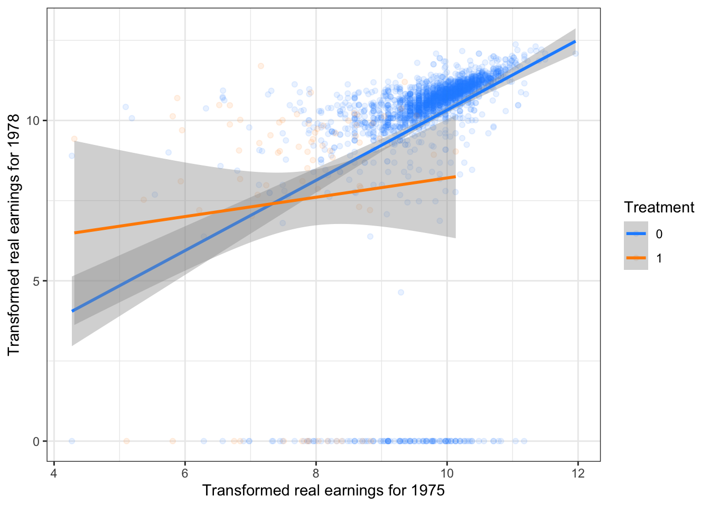
# Quadraticlalonde %>%filter(u75 ==0) %>%ggplot(aes(x=log(re75), y=ihs(re78), colour =as.factor(nsw))) +geom_point(alpha=.1) +geom_smooth(method="lm_robust", formula = y ~ x +I(x^2)) +xlab("Transformed real earnings for 1975") +ylab("Transformed real earnings for 1978") +scale_colour_manual("Treatment", values =c("dodgerblue", "darkorange")) +theme_bw()
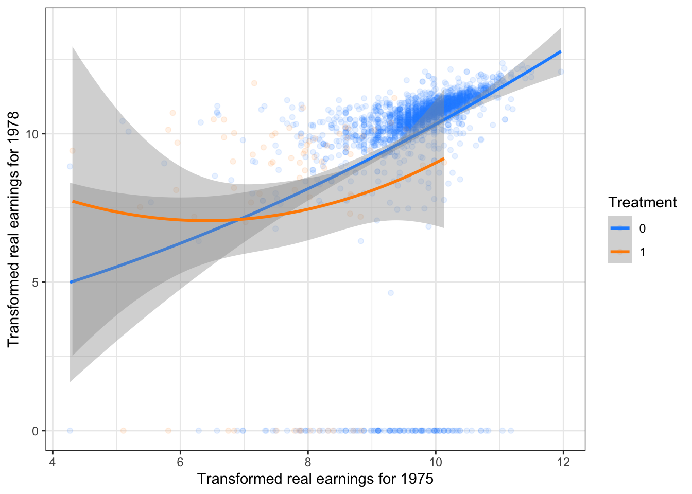
# Cubiclalonde %>%filter(u75 ==0) %>%ggplot(aes(x=log(re75), y=ihs(re78), colour =as.factor(nsw))) +geom_point(alpha=.1) +geom_smooth(method="lm_robust", formula = y ~ x +I(x^2) +I(x^3)) +xlab("Transformed real earnings for 1975") +ylab("Transformed real earnings for 1978") +scale_colour_manual("Treatment", values =c("dodgerblue", "darkorange")) +theme_bw()
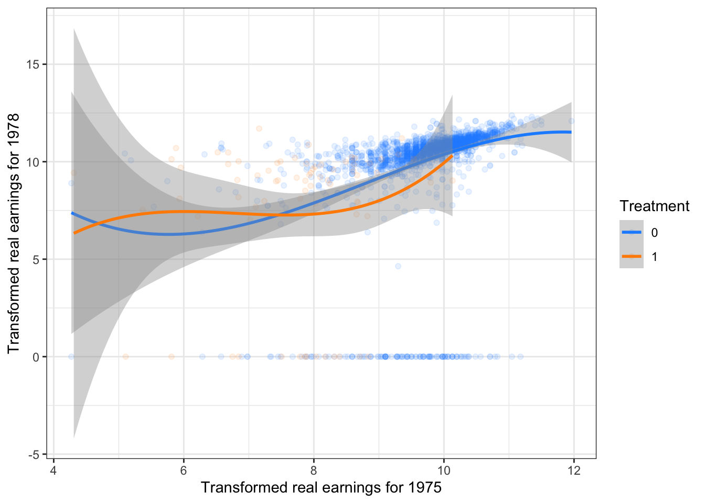
The model choice is a bit less consequential here - and linearity is not a terrible approximation. But note that now our quantity of interest has changed - it’s no longer the ATE on real earnings in 1978, it’s the ATE on a transformation of real earnings. This may be fine if what we really care about is just the direction of the effect, but it does affect interpretability.
Matching as pre-processing.
Let’s see what happens when we match on the pre-treatment covariates - let’s ignore the bias adjustment for now.
# Set ties = F to randomly break ties in distances. ties = T will change M to accomodate ties and increase the number of observations used - with lots of covariates, ties are rare so this doesn't matter much here.# weight = 2: Mahalanobis distance# M = 3: 3:1 matching, 3 control obs to 1 treated obsset.seed(60637) match_result <- Matching::Match(Y = lalonde$re78, Tr = lalonde$nsw, X = lalonde %>%dplyr::select(age, educ, black, hisp, married, re74, re75, u74, u75),M =3, Weight =2, estimand ="ATT", ties = F)summary(match_result)
Estimate... 1480.3
SE......... 733.64
T-stat..... 2.0177
p.val...... 0.04362
Original number of observations.............. 2675
Original number of treated obs............... 185
Matched number of observations............... 185
Matched number of observations (unweighted). 555
We get a lot closer to the experimental benchmark! Let’s calculate the “matching weights’ for each observation and see what’s going on.
match_weights =table(c(match_result$index.control, match_result$index.treated))/3lalonde$matchweight <-0# match_weights is the weight for each row number - # this is a quick trick to assign the weights to the right rowslalonde$matchweight[as.numeric(names(match_weights))] <- match_weights head(lalonde)
# What's the share of observations with 0 weightmean(lalonde$matchweight ==0)
[1] 0.875514
nrow(lalonde)
[1] 2675
# Subset the data to post-matching observationslalonde_postmatch <- lalonde %>%filter(matchweight !=0)nrow(lalonde_postmatch)
[1] 333
Matching throws away about 90% of the data! Let’s see what this means for estimating the CEF of re78 given re75.
# Scatterplotlalonde_postmatch %>%filter(u75 ==0) %>%ggplot(aes(x=log(re75), y=re78, colour =as.factor(nsw), size = matchweight)) +geom_point() +xlab("Transformed real earnings for 1975") +ylab("Real earnings for 1978") +scale_colour_manual("Treatment", values =c("dodgerblue", "darkorange")) +theme_bw()
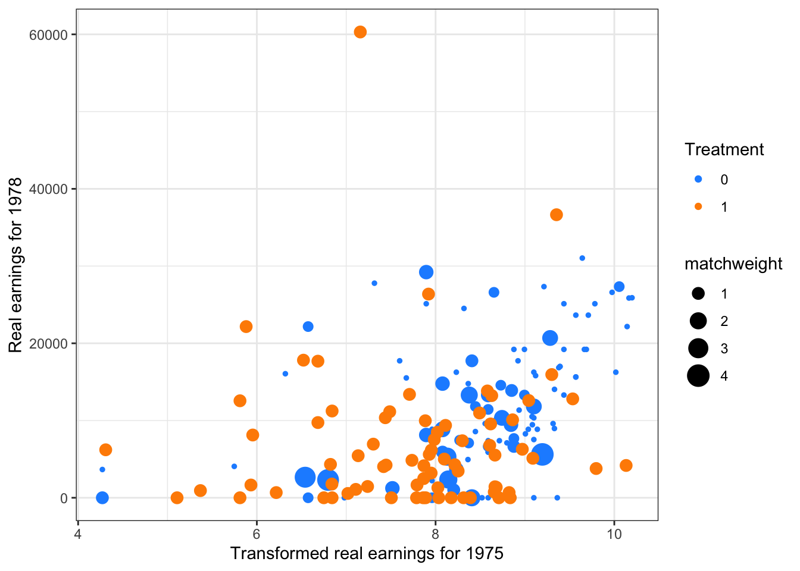
Post-matching, we have a lot better covariate overlap between treated and control groups. Let’s see whether this affects the impact our modeling choices
# Linearlalonde_postmatch %>%filter(u75 ==0) %>%ggplot(aes(x=log(re75), y=re78, colour =as.factor(nsw), size = matchweight, weight=matchweight)) +geom_point(aes(size=matchweight)) +geom_smooth(method="lm_robust", formula = y ~ x, size=1) +xlab("Transformed real earnings for 1975") +ylab("Real earnings for 1978") +scale_colour_manual("Treatment", values =c("dodgerblue", "darkorange")) +theme_bw()
Warning: Using `size` aesthetic for lines was deprecated in ggplot2 3.4.0.
ℹ Please use `linewidth` instead.
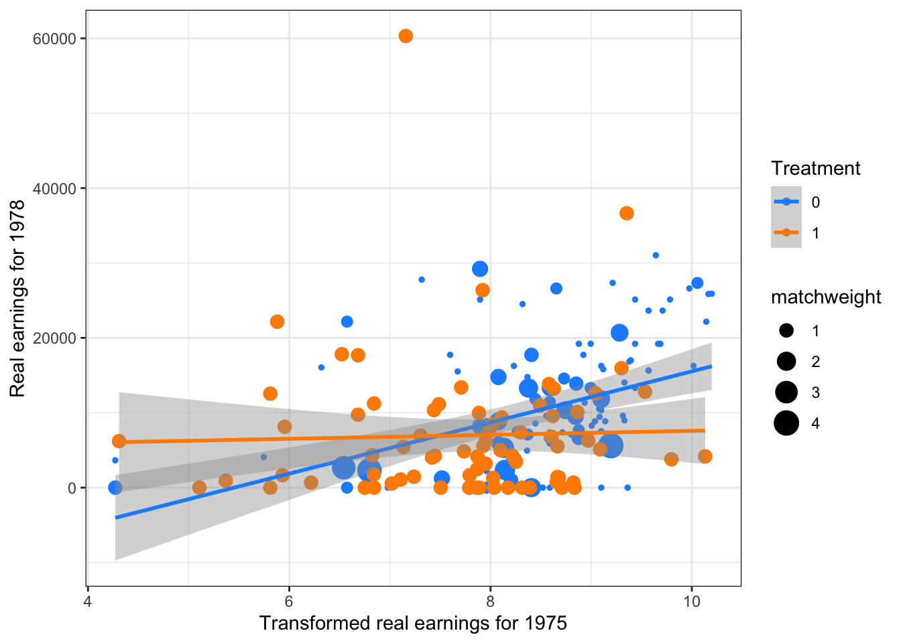
# Quadraticlalonde_postmatch %>%filter(u75 ==0) %>%ggplot(aes(x=log(re75), y=re78, colour =as.factor(nsw), size = matchweight, weight=matchweight)) +geom_point(aes(size=matchweight)) +geom_smooth(method="lm_robust", formula = y ~ x +I(x^2), size=1) +xlab("Transformed real earnings for 1975") +ylab("Real earnings for 1978") +scale_colour_manual("Treatment", values =c("dodgerblue", "darkorange")) +theme_bw()
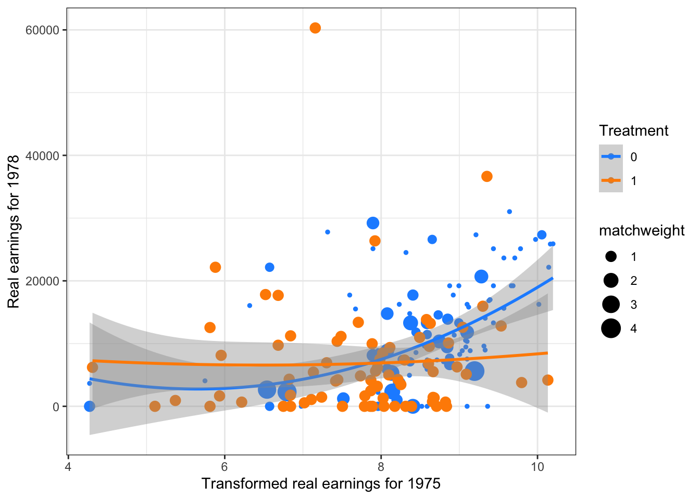
# Cubiclalonde_postmatch %>%filter(u75 ==0) %>%ggplot(aes(x=log(re75), y=re78, colour =as.factor(nsw), size = matchweight, weight=matchweight)) +geom_point(aes(size=matchweight)) +geom_smooth(method="lm_robust", formula = y ~ x +I(x^2) +I(x^3), size=1) +xlab("Transformed real earnings for 1975") +ylab("Real earnings for 1978") +scale_colour_manual("Treatment", values =c("dodgerblue", "darkorange")) +theme_bw()
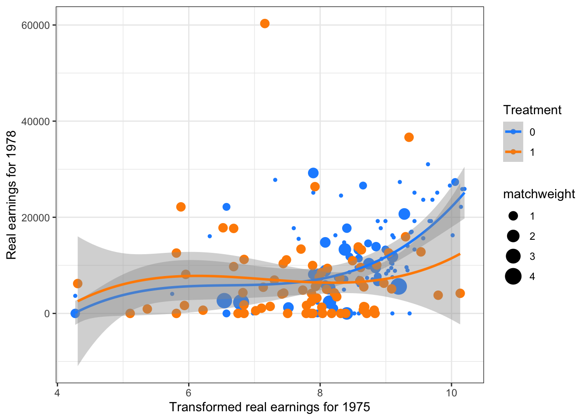
Each fit gives roughly similar results – interestingly what we find is that there’s not a whole lot of an effect among those employed in the pre-treatment period.
Challenge Problem
Play around with different modeling choices in the regression and see how close you can get to the benchmark target even without matching. Try a regression imputation approach by fitting separate treatment and control models. Consider doing imputation only for the ATT rather than the ATE - how would the imputation estimator change?